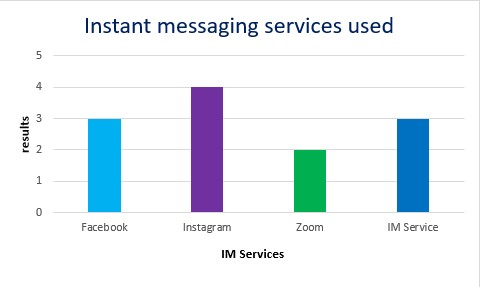
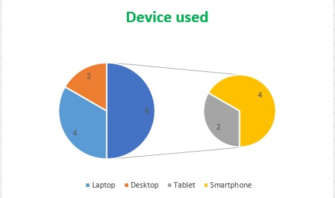
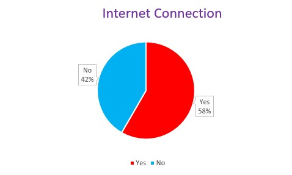

|
The evidence that is presented below the research done in regards to people using instant messaging to do busimess online and collected every data shown below.
Instant messaging services used
| facebook |
Instagram |
Zoom |
IM services |
| 3 |
4 |
2 |
3 |

Fig 1:Instant messaging services used graph
with the aforementioned. People who utilize instant messaging were questioned about the sort of communications they frequently use for business. The data above demonstrates that the majority of users use Instagram, demonstrating its popularity and widespread use as well as how zoom is used sometimes but still
Device used

fig 2:statis of the devices used
the data above show that most users use their laptop and Smartphone to do their business in their daily life
Internet Connection

fig 3:Pie chart of internet connection
As seen in the above-mentioned Pie Chart of users that utilize instant chatting. Different people utilizing instant messaging with and without an internet connection are depicted in the graph above. According to the statistics, 58% of respondents claim to have internet access, while the remaining 42% claim they do not.
for futher information click here
and check here
(Erkic, 2022)
|